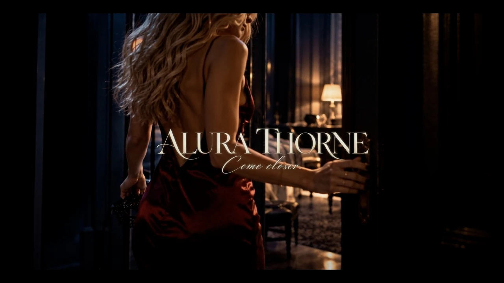
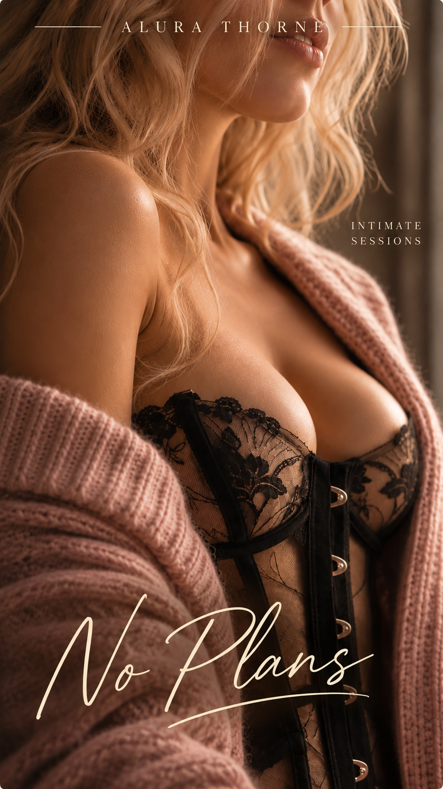
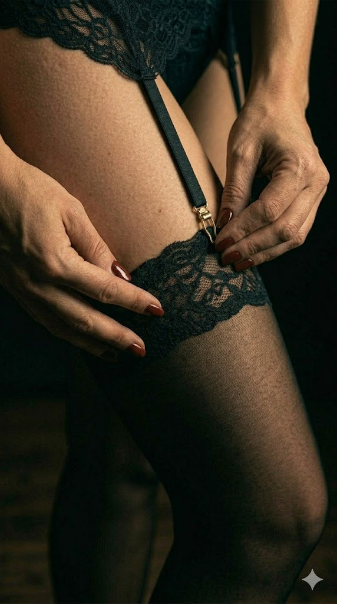

Cinematic AI trailer
Digital Character / Luxury / Fashion
An ongoing cinematic character world exploring intimacy, identity and atmosphere. Fashion, interiors and quiet encounters, connected through a consistent visual and sonic language.
Explore 8 films ↓
WATCH THE WORK
